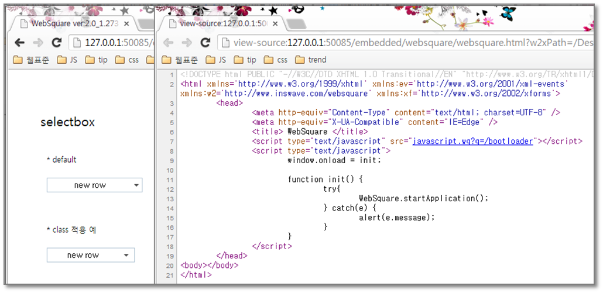
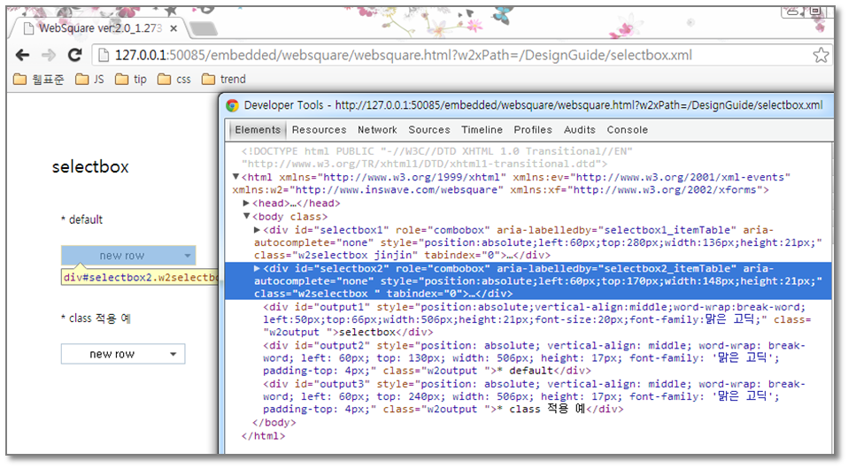
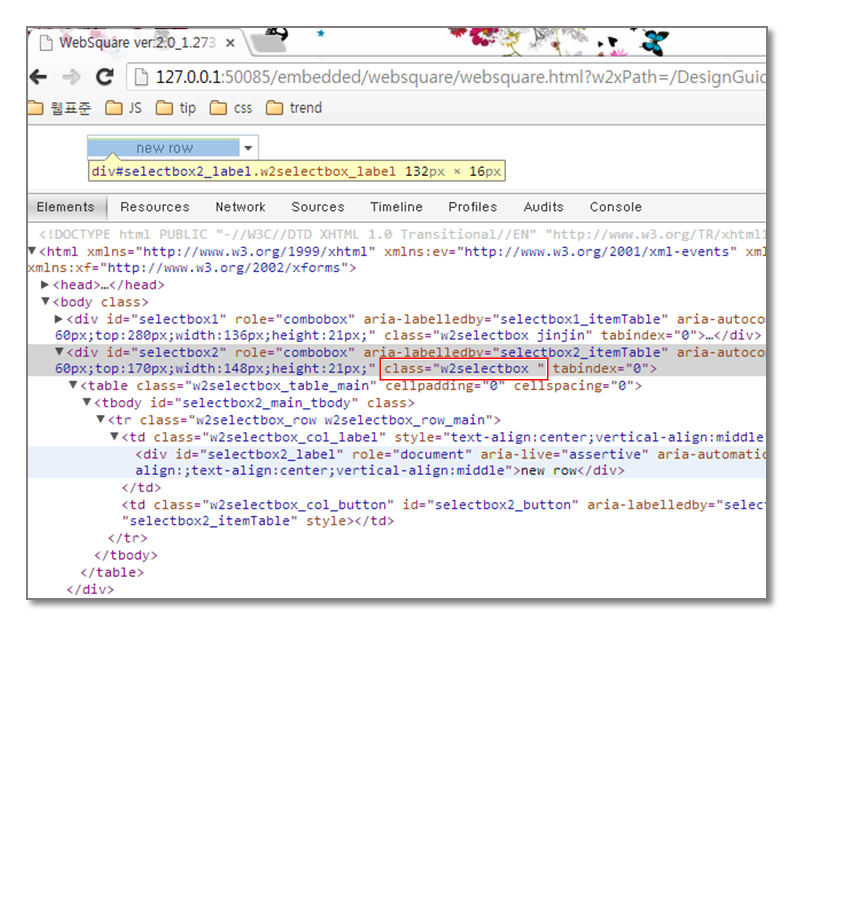
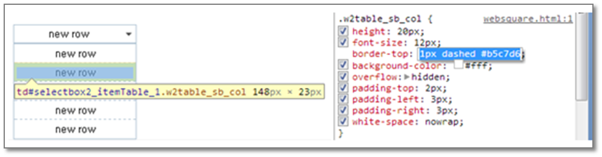
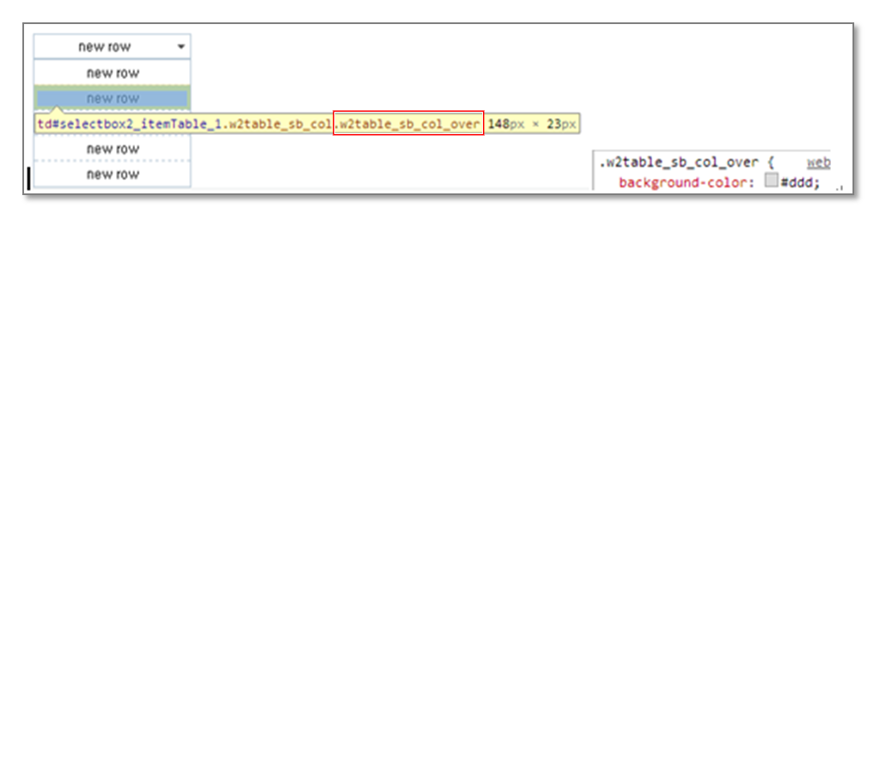
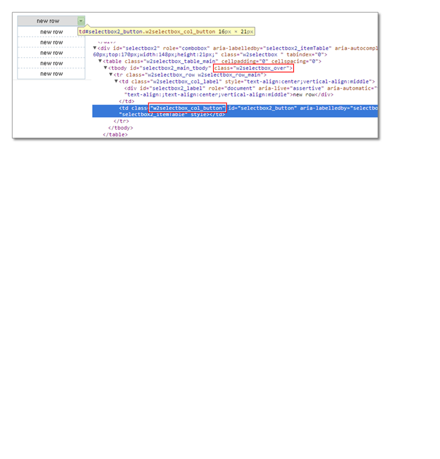
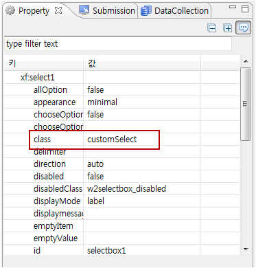
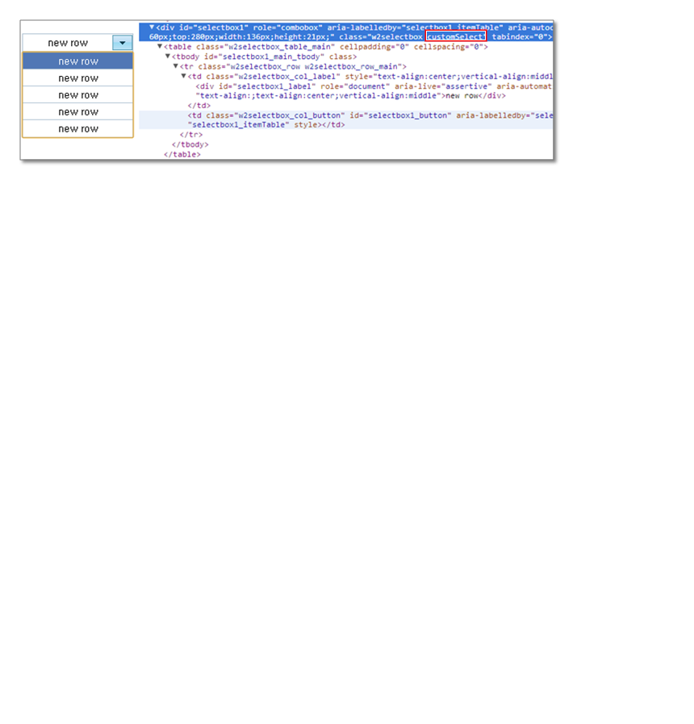
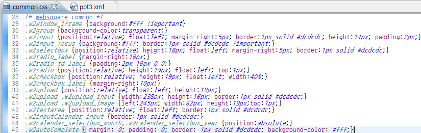
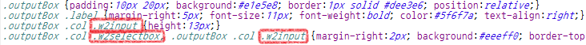

2.개발자 도구로 WebSquare 컴포넌트 구조 파악 및 CSS 적용하기
기본적으로 WebSquare 스튜디오에서 컴포넌트를 Design View에서 그리게 되면, WebSquare XML에 코드가 생성됩니다. WebSquare XML 파일을 미리보기 탭에 표시된 url로 브라우저에서 띄워 소스보기하면 xml이 파싱되기 전의 소스로 파싱된 html를 확인하지 못합니다.

[그림 2-1]브라우저에서 소스보기했을 때 파싱된 html이 보이지 않는다.
이때,개발자 도구를 이용하면손쉽게 WebSquare 컴포넌트가 파싱된 HTML 구조 파악이 가능하며, WebSquare 엔진 내부에서 기본적으로 들어가는 CSS class 파악을 할 수 있어 CSS 설계가 손쉬워 집니다. 개발자 도구는 각 브라우저에서 모두 제공됩니다. 개발자 도구는 작업자 도구는 작업자의 브라우저 취향에 따라 달라질 수 있으며, 이 문서의 예제는 사용이 비교적 간편한 Chrome 브라우저의 개발자 도구를 사용했습니다.
Chrome 브라우저에서F12 혹은 Ctrl+Shift+I를 눌러 빨리 호출할 수 있습니다. (Chrome 개발자 도구 이외에도 익숙한 브라우저의 개발자 도구를 사용하시면 됩니다.)

[그림 2-2]개발자 도구로 컴포넌트와 매치되는 앨리먼트를 선택해 소스를 확인할 수 있다.
그러면 본격적으로 컴포넌트 구조 파악 및 CSS를 적용해 보겠습니다. 위와 같이 개발자 도구로 파싱된 엘리먼트 중 CSS 속성을 변경하고 싶은 요소를 선택합니다.

[그림 2-3]개발자 도구, 특정 요소의 CSS 속성 선택
SelectBox 컴포넌트는 기본적으로 <table>로 파싱되어 있고 해당 아이템의 이름, 화살표가 서로 다른 td의 다른 클래스가 적용되어 있는 것을 확인할 수 있습니다. 기본적으로 들어있는 이'w2'로 시작하는 클래스들은 WebSquare 엔진에서 기본적으로 설계되어 있는 CSS(stylesheet.css)입니다. WebSquare로 퍼블리싱 작업을 하게되면, 이 클래스들을 토대로 선택자를 적절히 조합하여 이 기본 CSS를 오버라이딩 하여 CSS를 설계를 하게 됩니다.
간단한 예제로 SelectBox의 리스트 항목의 border-top 스타일과 마우스 오버시 bg 색상, 오른쪽 화살표 버튼의 bg 변경을 해보겠습니다.
우선 스타일을 적용할 요소의 선택자를 기록해 둡니다.
2.1border-top 스타일의 변경

[그림 2-4]border-top 스타일의 변경
CSS 개재 사항
.w2table_sb_col {border-top:1px solid #b5c7d6;}
2.2마우스 오버시 bg 색상 변경
한가지 유의 사항은 마우스 오버시와 또는 선택된 요소를 처리 할 때에는 :hover, :active, :focus와 같은 가상 클래스를 사용하여 CSS 처리를하여도 되지만 이것은 태그 특성에 따라 제약이 많게 됩니다.그렇기에WebSquare에서는 관련 CSS Class를 제공합니다. 마우스 오버시에 개발자 도구를 유심히 살펴보면 엔진에서 '_over', '_select'와 같은 클래스를 삽입하는 것을 볼 수 있습니다. WebSquare에서는 기본적인 UI를 제어할 수 있는 class가 있으므로 이 클래스를 사용하는 것이 수월합니다.

[그림 2-5]요소에 오버하는 순간 엔진에서 '해당 컴포넌트의 요소+_over' 의 클래스가 삽입되는 것을 확인할 수 있다.
CSS 개재 사항
.w2table_sb_col {border-top:1px solid #b5c7d6;} .w2table_sb_col_over { background-color : #5177b5;color:#fff;}
2.3오른쪽 화살표 버튼 bg 변경

[그림 2-6]12
CSS 개재 사항
.w2table_sb_col {border-top:1px solid #b5c7d6;} .w2table_sb_col_over { background-color : #5177b5;color:#fff;} .w2selectbox_over .w2selectbox_col_button { background-image:url(/DesignGuide/images/select_arrow_on.gif); }
마지막으로개발자 도구로 확인한 바와 같이 대부분의 컴포넌트의 골격은 div로 그려지게 되어 컴포넌트 자기 자신의 마크업은 div가 될 확률이 많습니다.SelectBox 컴포넌트 자신의 마크업이 될 태그로 div를 생각하고 SelectBox 자기 자신에 적용할 CSS Class(임의로 '.customSelect')를 만듭니다. .customSelect'에 띄어쓰기를 하여 변경사항을 적어 두었던 선택자가 하위선택자로 타 재정의될 수 있게끔 CSS를 작성하고, design View에서 해당 컴포넌트를 선택하여 property에 class를 입력하면 됩니다.
최종 CSS
.customSelect .w2table_sb_col {border-top:1px solid #b5c7d6;} .customSelect .w2table_sb_col_over { background-color : #5177b5;color:#fff;} .customSelect .w2selectbox_over .w2selectbox_col_button { background-image:url(/DesignGuide/images/select_arrow_on.gif); }
property view에서 class 입력

[그림 2-7]property view
실행 화면

[그림 2-8]14
위의 방법과 같이 직접 클래스를 선언해서 스타일을 지정하는 방법은 각각의 컴포넌트의 디자인을 위해서
사용하는 것이 수월하고, 해당 컴포넌트가 모두 공통의 디자인을 적용해야한다면 기본 제공 Class selector(Websquare 에서 기본으로 넣어주는 w2로 시작하는 class들)을 추가한 CSS 파일에서 재정의하여 사용하는 것이 더 작업이 수월합니다.

[그림 2-9]각 요소 및 컴포넌트를 초기화하여 공통스타일로 사용하기위해 사용자가 common.css를 따로 첨부하여 공통으로 재정의한 모습

[그림 2-10]outputBox란 컨테이너성 스타일 안에서는 inputbox와 select박스가outputBox 스타일에 맞는 스타일로 재정의 될 수 있도록 선택자 작성